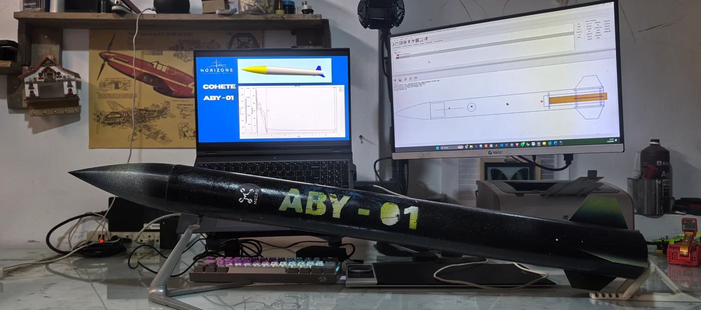
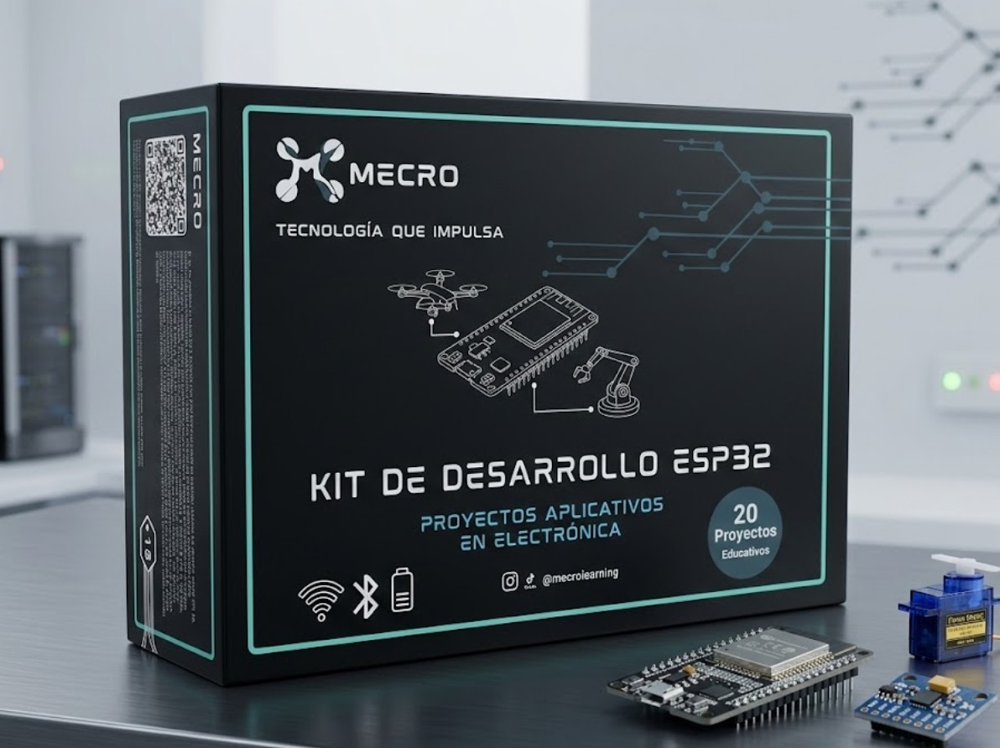

Drones y UAVs
Ingeniería y Ensamblaje de Drones
Selecciona componentes compatibles, comprende el cableado y relaciona Betaflight con el multirrotor. Seis clases online y dos talleres presenciales de demostración.
S/ 349.00Ver programa ↗
Del primer circuito al sistema de vuelo. Aprende a diseñar, programar y construir hardware aeroespacial con MECRO.
Drones, cohetería y sistemas embebidos.

Selecciona componentes compatibles, comprende el cableado y relaciona Betaflight con el multirrotor. Seis clases online y dos talleres presenciales de demostración.
Diseña y construye un modelo pequeño por equipos: piezas, OpenRocket, impresión 3D, ensamblaje y revisión del proyecto con motor comercial.
Del primer circuito a una estación de pruebas: programación, sensores, actuadores, adquisición de datos y control con ESP32 clásico.

Kit MECRO ESP32 · Imagen referencial
Una idea se entiende mejor cuando puedes conectarla, programarla y ponerla a prueba.
Conecta los fundamentos con los componentes que tienes frente a ti.
Trabaja con diagramas, código y proyectos de electrónica.
Aprende a interpretar resultados y ajustar tu diseño.
Cuéntanos tu experiencia y el proyecto que tienes en mente. Encontraremos un punto de partida.